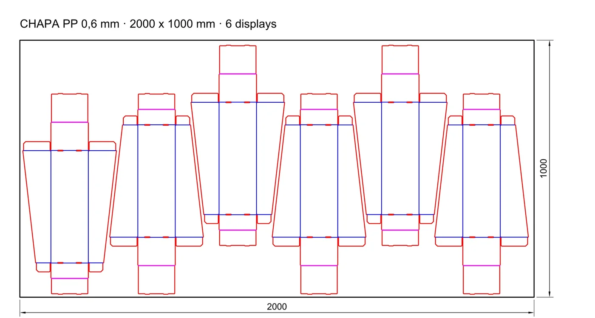
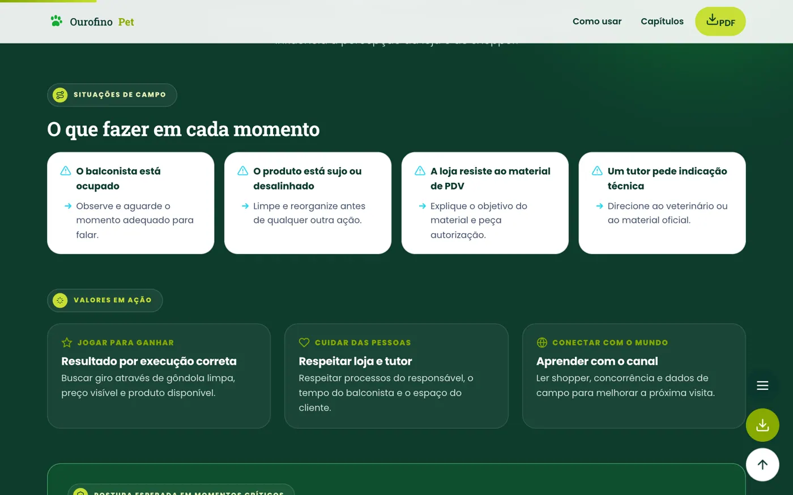
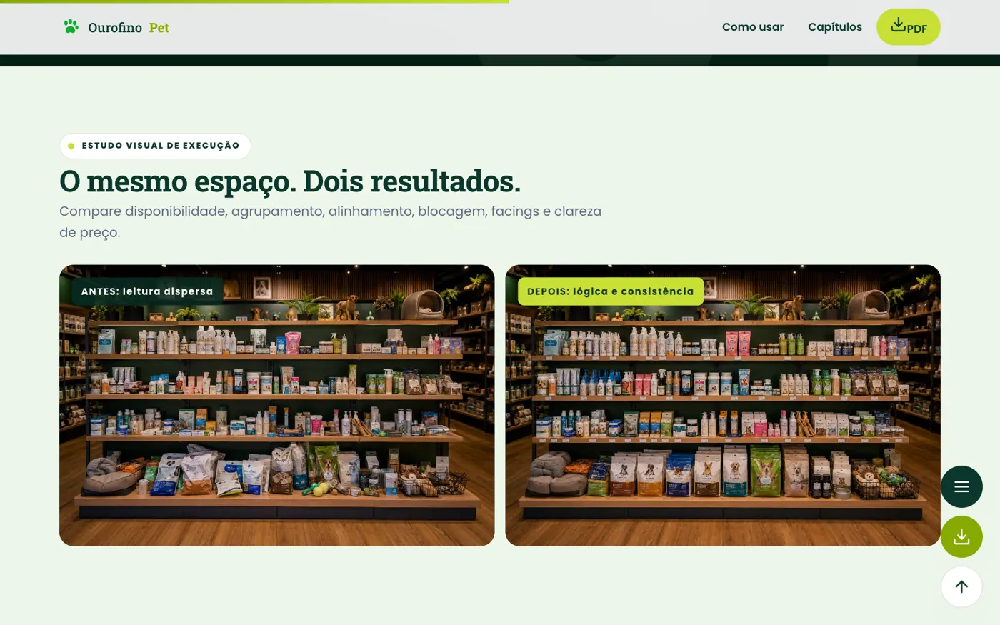
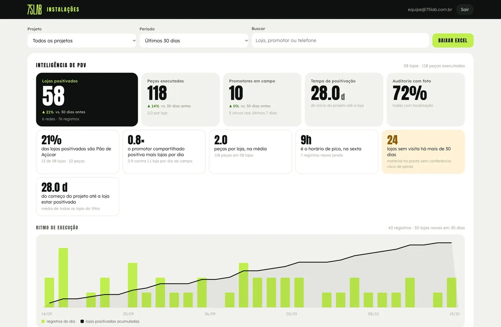
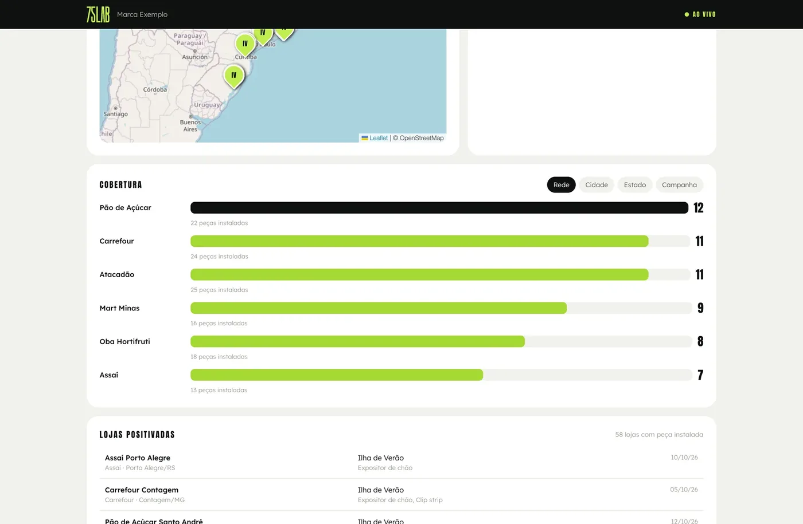
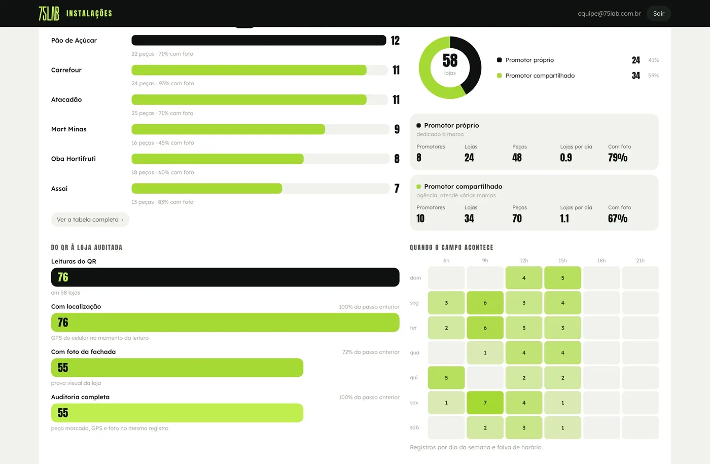

Ideia boa é a que aconteceBombrilQ'LustroSapólioLimpolMon BijouKaliptoIdeia boa é a que aconteceBombrilQ'LustroSapólioLimpolMon BijouKaliptoIdeia boa é a que aconteceBombrilQ'LustroSapólioLimpolMon BijouKalipto
Resumo executivo · a proposta em uma página
Da peça à loja perfeita: uma só casa para o trade do grupo.
01O desafio6marcas no mesmo corredor
Mais de 1.300 peças em 7 regiões, com um pedido claro: evolução, não reprodução, e custo total comparável.
02Nossa resposta17peças desenvolvidas
Cada uma com render, medida, capacidade e executivo, respondendo a inovação, resistência, manutenção e eficiência.
03Como compramos3orçamentos em toda peça
Engenharia com análise de matéria-prima, mesma especificação para os fornecedores e protótipo antes do lote.
04Além da peça12frentes que se plugam
Merchandising, loja perfeita, zonas quentes, auditoria com QR, manual com vídeo e AR, sistemas, incentivo, leads e ClickLab.
Quase tudo já está no ar: sistemas e exemplos abrem nesta apresentação.
Projeto, não fee: cada frente tem escopo, prazo e preço fechados.
Sem piloto: da visita técnica e da amostra direto para a produção por região.
01
Capítulo 01 de 10
O desafio
A leitura do briefing: as marcas, o pedido e onde o dinheiro se perde.
01Seis marcas, um corredor
02O que vocês pediram
03O custo depois da nota
04A tese
01O desafio02Quem é a 75 LAB03As peças do grupo04Engenharia e compra05Promotoria de venda06Instalação e auditoria07Sistemas de trade08Vender mais09Além do PDV10Como começamos
Líder na lã de aço. O resto do corredor ainda está em jogo.
Bombril60,5%da lã de aço em unidades
Na esponja sintética são 6,1% em volume. O ponto natural da lã de aço pode puxar a esponja.
Q'Lustro3,2%com Bombril, o grupo soma 63,7%
A segunda marca precisa dividir o ponto sem competir com a primeira.
Sapólio32%do saponáceo em valor
2º em penetração nas sete regiões, com baixa visibilidade no PDV.
Limpol30capas de gôndola no RJ
Perfumes ganha ponta própria; a linha aparece em todos os móveis multimarcas.
Mon Bijou200displays institucionais
Roupas delicadas pede explicação e destino de compra, não só volume.
Kalipto180+kits com enxoval de gôndola
Cor e fragrância organizam a gôndola quando o bloco está certo.
Fonte: briefing Trade Marketing Bombril, out/2026 (Scannshare YTD jan/abr 2026; Scanntech jun/2025 e Kantar Consumer Book 2025). Quantidades de peça conforme o briefing.
Vocês pediram evolução, não reprodução.
01
Inovação
O briefing pede
Soluções técnicas e criativas, com prioridade para o móvel BL.
O que entregamos
Móvel BL redesenhado em família: cadeirinha, Assaí e ilha na mesma linguagem. Sapólio Premium com vitrines que o shopper abre.
02
Resistência
O briefing pede
Menos avaria por carrinho e empilhadeira, proteção contra ferrugem e umidade.
O que entregamos
Bate-carrinho, rodapé e proteção de base como itens de projeto, com estrutura conferida em cálculo, peça a peça.
03
Manutenção
O briefing pede
Peças removíveis e reposição simples pelo time de merchandising.
O que entregamos
Cada componente com código gravado, arte trocável e manual com a lista de peças de reposição.
04
Eficiência
O briefing pede
Medida de cada loja, montagem prática e melhor custo total de uso.
O que entregamos
Variações de medida por módulo, kit plano onde cabe e material escolhido pela conta do ciclo inteiro.
+1.300peças com quantidade no briefing
7regiões, com padrão nacional e adaptação regional
6marcas do grupo
17peças que já desenvolvemos para esta concorrência
Fonte: briefing Trade Marketing Bombril, out/2026, págs. 17 a 28.
O custo do MPDV não termina na nota fiscal. Começa quando a peça chega à loja.
O briefing pede para comparar o investimento inicial com a manutenção e a reposição. Entre a fábrica e o fim da vida da peça existem duas perdas que quase ninguém mede.
Produzido
100%é o que vocês pagam
Perda 1Chega e não é montada
A peça fica no estoque, ou é montada fora do ponto combinado. O custo saiu inteiro.
Instalado
?quantos, onde e quando?
Perda 2Bate, oxida e fica torta
Carrinho, empilhadeira e umidade. Sem peça de troca, o móvel inteiro perde o valor.
Em pé e bonito
?é o que gera resultado
O que a 75 LAB faz com isso
Desenhamos para trocar só o que quebra, com código e kit de reposição, e medimos a instalação peça a peça. O número orienta a próxima compra.
O resultado não se decide na ideia.
Decide-se no intervalo entre a aprovação e a loja. E quase ninguém mede esse intervalo.
Aprovação
Loja
O intervalo
Prazo
A campanha certa fora da data vale zero.
Conformidade
A arte certa com a informação legal errada custa mais do que não ter feito.
Rastreabilidade
Quem não sabe qual versão foi para a gráfica descobre na loja.
02
Capítulo 02 de 10
Quem é a 75 LAB
Por que existimos, quem responde pela conta e o que já entregamos.
01Propósito
02Diferencial
03A estrutura
04Quem responde pela conta
05Nossos números
06Clientes
07Cases
08Depoimento e vídeos
01O desafio02Quem é a 75 LAB03As peças do grupo04Engenharia e compra05Promotoria de venda06Instalação e auditoria07Sistemas de trade08Vender mais09Além do PDV10Como começamos
Nosso propósito
Transformar intenção em realidade no ponto de venda.
A 75 LAB nasceu da soma de dois lados que quase nunca se sentam à mesma mesa: o varejo e a indústria. Por mais de 15 anos vivemos a distância entre a intenção comercial de uma marca e o que de fato acontece na loja. Existimos para fechar essa distância.
IndústriaLançamento, categoria, P&Lo lado de quem vende para o varejo
← valor →
VarejoLayout, execução, aprovaçãoo lado de quem opera a loja
Não somos uma agência tradicional. Somos uma aceleradora de trade.
Modelo tradicional
BriefingRetrabalhoAtrasoVerba evapora
Modelo 75 LAB
IntençãoImersãoSoluçãoExecuçãoResultado
01Vivemos o trade, não só aprendemos
Os sócios vêm do varejo e da indústria: os dois lados do balcão estão na mesma mesa.
02Solução certa, nunca de prateleira
Montamos a estrutura pela demanda de cada cliente, não um pacote pronto.
03Para cada desafio, a equipe certa
Hub de especialistas e fornecedores, com governança ponta a ponta e sem markup oculto.
04Prova acima de promessa
Medimos o que entregamos: peça a peça, loja a loja.
0%projetos aprovados
−0%de custo de produção com o fornecedor certo
0+PDVs positivados
+0anos no trade, dos dois lados do balcão
Fonte: 75lab.com.br, números da 75 LAB.
Montamos a estrutura, não só a campanha.
A 75 LAB é uma aceleradora de trade marketing, parceira de desenvolvimento de negócios. Não entregamos um formato de prateleira: montamos a estrutura e os projetos pela demanda de cada cliente. O modelo se apoia em quatro frentes, e elas vivem na mesma casa.
Uma casa
Clique em cada frente
Frente 01
Estratégia
Leitura de canal, de shopper e de rede, com o papel de cada marca em cada ponto. É o que decide onde a peça entra e o que não precisa ser feito.
Leitura de canal, de shopper e de rede, com o papel de cada marca em cada ponto. É o que decide onde a peça entra e o que não precisa ser feito.Direção de arte, 3D, engenharia de peça e arte-final. Uma só direção para as seis marcas, com padrão nacional e adaptação regional.Coordenamos cotação, protótipo, QA e logística, e vocês não ficam limitados à nossa rede: trabalhamos com os fornecedores já homologados por vocês, com os nossos parceiros em cinco famílias, ou com os dois. Podemos indicar novos, mas a homologação segue sendo processo de vocês.Ariuno para demandas e entregas, AR antes de produzir, manual no QR, painel de auditoria e sistemas sob medida. É frente própria, não um extra de proposta.
Os dois lados do balcão, na mesma mesa.
É o mesmo time que opera a conta, não uma equipe montada para a concorrência.
0anos
Daniel Coimbra
de trade marketing, do lado de quem vende para o varejo
0anos
Caique Becker
de varejo, do lado de quem operou a loja
(✓) Documentação pronta para a homologação
AlvaráAVCBABVTEXCertidõesDCTFWeb
Quem responde pela conta é quem opera.Daniel CoimbraCaique Beckercofundadores da 75 LAB
Números da 75 LAB · 12 meses medidos no nosso sistema
A 75 LAB em números: a operação que já rodamos hoje.
0entregas concluídas em 12 meses, entre jobs e etapas
0jobs concluídos de ponta a ponta no mesmo período
0clientes com demanda aberta nos últimos 12 meses
0jobs ativos ao mesmo tempo no pico, em 26/10/2026
0clientes atendidos em paralelo nesse mesmo pico
0dias úteisprazo mediano do pedido à entrega em baixa complexidade
0dias úteisprazo mediano em alta complexidade: stands, enxovais e obras
0h/mêsde trabalho apontadas tarefa a tarefa, de julho a setembro
Dados da própria 75 LAB, não de cliente. Fonte: Ariuno, sistema de gestão da 75 LAB · 28/10/2025 a 27/10/2026 · horas apontadas de jul a set/2026. Baixa complexidade: jobs com até 8 h de trabalho; alta: acima de 16 h.
Já estamos nos corredores de vocês.
Supermercado, atacarejo e loja de categoria: as marcas que atendemos negociam com os mesmos compradores e disputam as mesmas pontas.
Canal alimentarsupermercado, atacado e conveniência
Varejo especializadoloja de categoria e rede
Já entregamos as três etapas que uma agência de criação não executa.
Gire as peças com o mouse, veja a foto ou abra em AR no celular
Ponta de gôndola de lavadoras numa loja 24 horas, sem janela para instalar. Projeto técnico em três níveis de custo, LED integrado com retomada automática após queda de energia e guarda-corpo nas três laterais.
Módulo de 1,78 × 0,99 × 1,45 m · três rotas · produção de 15 dias úteis · instalação prevista para 10/11/2026
Categoria técnica, de venda assistida, num varejo que vai do nacional ao regional. Curadoria dos 19 recursos do produto em três destinos e enxoval com perfil de loja e instrução de montagem para cada nível.
18 peças em dois caminhos visuais, em quatro níveis de enxoval: P, M, G e Premium
Alltak · feira Future Print
Projeto especial é obra
Stand de lançamento de marca. Projeto executivo completo (layout, cobertura, painéis de LED, rampa, expositores e comunicação) mais as artes aplicadas, do lambe-lambe de padrão ao neon flex.
Ambientes separados para Decor e Signs, com parede de amostras e carros envelopados no piso do stand
Quem já viveu um cronograma com a gente · stand Alltak Decor
“Desde a primeira reunião, me surpreenderam com essa parte de planejamento.
“Um programa viável de execução. Datas de aprovações, datas de execução, finalização para a entrega do stand.”
Marcelo AbreuAlltak
Projetos da 75 LAB em vídeoClique num vídeo para assistir no celular ao lado
Vídeos de projetos da 75 LAB: Instagram @setecincolab, site 75lab.com.br e acervo de cases.
03
Capítulo 03 de 10
As peças do grupo
Design avançado e as peças da concorrência, inclusive em realidade aumentada.
01Design avançado
02As 17 peças do grupo
03As peças em realidade aumentada
01O desafio02Quem é a 75 LAB03As peças do grupo04Engenharia e compra05Promotoria de venda06Instalação e auditoria07Sistemas de trade08Vender mais09Além do PDV10Como começamos
Design avançado
A peça tem de parar o carrinho antes de explicar qualquer coisa.
01
FormaCurva, recorte e relevo por fora, chassi reto por dentro.
02
MarcaCor e logo de cada marca do grupo, sem uma engolir a outra.
03
ComunicaçãoTesteira, faixa e placa trocáveis a cada campanha.
04
VerdadeRender com a embalagem real, na medida real, igual ao conceito aprovado.
Clique em cada peça
HojeProposta 75 LAB
Cadeirinha com orelhas curvas, testeira limpa e o oval em primeiro plano. O mix do grupo inteiro em volume.
HojeProposta 75 LAB
De coluna de arame a torre com base fechada, oval no topo e cinco cestos de carga.
HojeProposta 75 LAB
O mesmo volume a granel, agora com painel bojudo de marca e pés niveladores.
HojeProposta 75 LAB
O frasco continua como ícone, com prateleiras reforçadas e leitura de linha por cor.
Displays 3 e 6 fardos636 e 1.269 × 542 × 1.720 mmFD04
Torre lã de aço e esponjas783 × 605 × 1.750 mmTR06
Caçamba Sam's1.000 × 700 × 630 mmMN07
Display Radium550 × 412 × 1.805 mmSP12
Premium Espuma Ativa682 × 537 × 1.420 mmSP13
GC Guanabara2.270 × 440 × 1.998 mmSP14
Enxoval Cremoso P1.998 × 726 × 1.270 mmSP15
Enxoval Cremoso G2.435 × 938 × 1.670 mmSP17
Capa de gôndola Limpol1.180 × 986 × 2.510 mmCG09
Kalipto + enxoval2.056 × 580 × 1.500 mmKL08
Institucional Mon Bijou450 × 348 × 1.600 mmIN18
Renders da 75 LAB para a concorrência MPDV do grupo Bombril. Medidas em mm (L × P × A). Displays 3 e 6 fardos na mesma imagem; o kit M do enxoval Cremoso aparece junto do G.
Aprovem a peça no chão da loja, em tamanho real.
Duas peças do grupo já estão em realidade aumentada. O comprador, o trade e o promotor abrem no celular, sem instalar nada, e veem se a peça cabe antes de produzir.
Gire as peças com o mouse ou aponte a câmera para o QR
Torre de lã de aço e esponjas783 × 605 × 1.750 mm · 60 pacotes e 48 cartelasAbrir a página em AR ↗
Como a peça fica de pé, custa menos e é comprada com transparência.
01Capacidade e estabilidade
02Engenharia e aproveitamento de chapa
03Redução de custo e matéria-prima
04Área de cotação
01O desafio02Quem é a 75 LAB03As peças do grupo04Engenharia e compra05Promotoria de venda06Instalação e auditoria07Sistemas de trade08Vender mais09Além do PDV10Como começamos
Quanto cabe e quanto aguenta: em número, antes do protótipo.
O briefing pede capacidade de carga, estabilidade, abastecimento e componentes substituíveis. Cada executivo já traz a conta com a carga do produto real: flecha é quanto a prateleira cede, e o critério de tombamento é de 10°.
Torre de lã de aço60 pacotes + 48 cartelas
0,57 mm de flecha · limite 1,18 mm
16,0°tomba só a partir desse ângulo
Cesto Rede Max138 pacotes a granel
2,4 mm de flecha · limite 3,06 mm
48°tomba só a partir desse ângulo
Caçamba Sam's36 Mini Rolinhos + 32 esponjas
0,28 mm de flecha · limite 3,19 mm
48°tomba só a partir desse ângulo
Display Sapólio196 frascos de 450 ml
0,3 mm de flecha · limite 1,71 mm
11,6°tomba só a partir desse ângulo
Institucional Mon Bijou48 frascos de 1 L
0,07 mm de flecha · limite 1,39 mm
2 tubosde aço sob cada prateleira
Fonte: verificação estrutural dos executivos da 75 LAB, 31/10 a 01/11/2026. Cálculo com carga + 20%. O teste físico entra na etapa de protótipo, antes do lote.
A peça é desenhada para a fábrica, não só para o render.
Todo executivo sai com vistas, cortes, planificado com faca 1:1, lista de materiais e o estudo de aproveitamento de chapa. Quando a geometria desperdiça material, a gente muda a peça.
Estudo de chapa · display Président (Lactalis) · chapa de 2000 × 1000 mm
Laterais duplas
84 embalagens de 150 g por chapa · 3 displays
Laterais simples
140 5 displays
Versão adotada
168 6 displays · 59% da chapa
2×o produto exposto por chapa comprada, mudando a peça e não o fornecedor

Executivos que entregamos · clique para ampliar a folha
Fonte: projetos executivos da 75 LAB (outubro de 2026), em DXF e PDF A2. Aproveitamento com 6 mm entre peças e 10 mm de margem.
O custo cai na matéria-prima, sem mexer no que o shopper vê.
Exemplo real · Torre de lã de aço, 1ª rodada de custo
−0%no custo de produção por kit, com o visual igual
Pintura só onde apareceFace interna da base e da coluna sem epóxi, fechada e galvanizada
Solda a ponto no lugar de MIGNos ganchos dos cestos, com teste de tração na prova
Tubo 1,20 no lugar de 1,50Nos montantes internos, conferido no cálculo do gancho
Chapa 0,80 no lugar de 0,95No U da coluna; a frente com rasgos continua 0,95
Chapa de ACM em outro formatoMesmo material, melhor encaixe no plano de corte
Como escolhemos o material, peça a peça
Impacto
Umidade
Impressão
Economia
Onde usamos
Aramado com epóxi
n/a
Cesto, tela e carga a granel
Chapa e metalon
Chassi, coluna e prateleira
MDF RU e BP
Prateleira reforçada, móvel fechado
ACM
Painel e lateral de longa vida
PS
Comunicação em canaleta, termoformado
Polionda
Display leve de campanha
PVC cristal
n/a
Porta-preço e proteção de arte
Mais quadrados, melhor desempenho. Referência da engenharia da 75 LAB: a decisão final de cada peça sai da cotação real, do peso do produto e da vida útil pedida.
Fonte: executivo TR06 R01 da 75 LAB, 01/11/2026.
Toda peça entra com três orçamentos. Sempre.
Mesma folha para os trêsOs fornecedores cotam o mesmo executivo, com a mesma faca e a mesma lista de materiais.
Quem vocês já homologaram entraFornecedor de vocês, rede 75 Partners ou os dois. A homologação segue com vocês.
O parecer fica escritoPreço, prazo, protótipo, capacidade e fiscal na mesma tela, com o motivo da escolha.
Sem markup ocultoVocês veem a comparação e a decisão, peça a peça.
Área de cotação · concorrência MPDV
Torre de lã de aço
Fornecedor A
Fornecedor B
Fornecedor C
Índice de preço (menor = 100)
108
100
103
Prazo em dias úteis
25
32
25
Protótipo antes do lote
Sim
Sim
Sim
Capacidade para o volume
Ok
Ok
Ok
Certidões e fiscal
Ok
Ok
Ok
Parecer
Fora do melhor ponto
Menor índice, prazo no limite
Indicado: prazo e custo total
Cesto Rede Max
Fornecedor A
Fornecedor B
Fornecedor C
Índice de preço (menor = 100)
100
112
106
Prazo em dias úteis
20
18
28
Protótipo antes do lote
Sim
Sim
Não
Capacidade para o volume
Ok
Ok
Ok
Certidões e fiscal
Ok
Ok
Pendente
Parecer
Indicado: menor índice no prazo
Fora do melhor ponto
Falta certidão e protótipo
Display Sapólio
Fornecedor A
Fornecedor B
Fornecedor C
Índice de preço (menor = 100)
104
100
101
Prazo em dias úteis
30
30
26
Protótipo antes do lote
Sim
Sim
Sim
Capacidade para o volume
Ok
Parcial
Ok
Certidões e fiscal
Ok
Ok
Ok
Parecer
Fora do melhor ponto
Capacidade parcial para o volume
Indicado: capacidade e prazo
Clique em cada peça
Simulação com fornecedores e índices de exemplo · nenhum orçamento real nesta tela.
05
Capítulo 05 de 10
Promotoria de venda
Método e ferramenta para a loja sair perfeita, sem contratar promotor.
01O que entregamos
02Manual de merchandising
03Loja perfeita
04Sistema de gestão de promotor
05Zonas quentes
01O desafio02Quem é a 75 LAB03As peças do grupo04Engenharia e compra05Promotoria de venda06Instalação e auditoria07Sistemas de trade08Vender mais09Além do PDV10Como começamos
Promotoria de venda
Promotor não precisa de mais tarefa. Precisa de regra clara e de uma tela só.
Clique para ver cada entrega
O que não fazemos: contratar nem gerir promotores.A equipe continua com vocês ou com a agência de campo de vocês. A 75 LAB entrega o método e a ferramenta que essa equipe usa.


Um manual que o promotor abre no celular, na frente da gôndola.
01
Por canalAtacarejo, super e vizinhança: o que muda em cada um
02
Por marcaBombril, Q'Lustro, Sapólio, Limpol, Mon Bijou e Kalipto
03
Planograma P, M e GFoto por frente, régua de preço e bloco de cor
04
Situações de lojaO que fazer quando falta espaço, produto ou peça
05
Peças e reposiçãoCódigo de cada componente e como pedir a troca
06
Checklist de visitaA sequência da chegada ao registro
Já no ar: Manual de Execução em PDV da Ourofino Pet, 15 capítulos, navegável e com PDF. Abrir o exemplo ↗
Loja perfeita é uma conta, não uma opinião.
A mesma régua em todas as regiões, para comparar loja, rede e promotor sem discussão.
0pontos nesta visita
Comece marcando o que está certo na loja
Clique em cada critério
Exemplo de régua. Critérios e pesos finais saem com o trade de vocês, por canal e por marca.
Rota, checklist e foto: o dia do promotor numa tela só.
Hoje · 6 lojas
Rota do dia
Assaí AnhangueraFeita · nota 92
Atacadão OsascoAgora · 1,2 km
Max Barueri11h30
Guanabara14h00
Fazer check-in
Atacadão Osasco
Checklist · 5 de 8
Mix obrigatório
Bloco no ponto natural
Ponto extra
Peça montada e limpa
Abastecimento
Preço na régua
Campanha vigente
Registro
Foto da peça
GPS confere · 12 m da loja
Abrir ocorrência
Concluir visita
Para o promotorSabe onde ir, o que conferir e como registrar, sem planilha.
Para o supervisorVisitas feitas, nota por loja, ocorrências abertas e ranking.
Para o tradeA execução por rede, região e marca, ao vivo, com a foto de cada loja.
Base já em campoSai da mesma base do 75Search, nosso app de auditoria de PDV, com share de gôndola, preço e EAN.
Telas de exemplo, com lojas e números fictícios. O sistema é ferramenta da operação: contratação e gestão da equipe de promotores ficam fora do escopo da 75 LAB.
Mapa de zonas quentes: a peça vai onde o fluxo passa e a compra decide.
Clique em cada zona
Primeiro contato e fluxo de todos os carrinhos. Lugar de peça grande e de lançamento.
Ilha BL
Porte indicado: G
Parada natural na virada do corredor. Vale testeira forte e marca única.
Capa LimpolSapólio Premium
Porte indicado: M e G
O ponto natural: quem está aqui já veio comprar. Volume, bloco e régua de preço.
BL AtacadãoModular MaxGC Sapólio
Porte indicado: G
Fora da categoria, perto de quem lembra ao ver: lã e esponja junto de louça e açougue.
TorreMon Bijou
Porte indicado: P e M
Último metro, pouco espaço. Peça compacta e item de reposição rápida.
Caçamba mini
Porte indicado: P
1Planta e visitaLojas-modelo de cada rede e canal, com foto e medida.
2Fluxo observadoPor horário: por onde o carrinho passa e onde para.
3Nota por pontoCada ponto recebe nota e porte de peça.
4Guia de positivaçãoVai para o manual e para o check-in do promotor.
Planta e classificação ilustrativas. O mapa real sai da visita às lojas de cada rede.
06
Capítulo 06 de 10
Instalação e auditoria
Da caixa à foto: manual no QR e auditoria de cada ponto de venda.
01Manual de instalação com vídeo e AR
02Auditoria com QR
03O painel
04O que vocês ganham
01O desafio02Quem é a 75 LAB03As peças do grupo04Engenharia e compra05Promotoria de venda06Instalação e auditoria07Sistemas de trade08Vender mais09Além do PDV10Como começamos
Plataforma de manual de instalação
O manual mora no QR da peça, com vídeo e realidade aumentada.
Aponta a câmeraSem aplicativo e sem login, na própria embalagem.
Vê a peça em ARConfere se cabe no ponto antes de abrir a caixa.
Assiste e montaVídeo e passos ilustrados, no celular.
Pede a reposiçãoCada componente com código, foto e kit básico.
RegistraNome, loja, GPS e foto da fachada, direto no painel.
É a resposta ao pedido do briefing: manual ilustrado, códigos e kit básico de reposição, sem papel que se perde na loja.
Demonstração · torre BombrilNo ar · vídeo de montagem
Auditoria de PDV: cada peça tem um QR e conta a própria história.
BOM-TR06-0412torre de lã de aço · loja 0412
1 · Código na peça
Cada peça sai da fábrica com etiqueta própria, não um QR de campanha.
2 · Expedição
O scan na saída registra o que foi enviado a cada região e loja.
3 · Recebimento
A loja ou o promotor escaneia ao receber.
4 · Instalação com foto
Montada, fotografada, com GPS e hora.
5 · Auditoria
Continua lá? Revisita por amostra e ocorrência de quem não leu.
6 · Painel
Tudo ao vivo, por loja, rede, região e marca, desde o primeiro envio.
QR em etiquetapara material de campanha, descartável e em massadisplay de polionda, enxoval, capa de gôndola, testeira de campanha
GPS ou BLEpara ativo caro que voltamóvel BL, ilha, GC Sapólio e cadeirinhas
Já está no aro scan abre a página da peça, com montagem, vídeo e AR, e registra loja, GPS e fotoem uso nas peças que produzimos, não é protótipo de apresentação
Painel do QR · demonstração com dados de exemplo
O scan da loja chega ao painel na hora, com GPS e foto.
Clique nas abas para trocar a vista do painel
projetos.75lab.com.br/produtos/painel



Cada leitura gravaloja, rede, promotor próprio ou compartilhado, GPS com a precisão e a foto da fachada.
Loja pelo GPSaté 150 m é a mesma loja: o painel conta lojas, não leituras.
Leitura prontalojas positivadas, ritmo do dia, tempo até a loja e ranking por rede, cidade e estado.
Excel e link ao vivotudo em Excel num clique, e o trade de vocês acompanha por um link sem login.
Números e ritmoMapa das lojasCruzamentos
Fonte: painel do QR da 75 LAB em modo demonstração · dados de exemplo, nenhum dado de cliente.
O que hoje é relato de campo vira dado auditável.
Com o QR embarcado na peça, cada envio devolve informação que hoje não existe, e ela segue valendo na hora de comprar de novo.
A peça
Auditoria de positivação
Conferência de que o material foi realmente posicionado, loja a loja, e não apenas enviado.
Book de fotos ao vivo
A execução chega fotografada conforme acontece, sem esperar relatório de fim de ciclo.
Data e hora de entrada
Quando a peça entrou em cada loja: atraso de fornecedor vira número.
Entrada por recorte
Quanto entrou por região, rede e porte de peça, e onde emperrou.
Correlação com venda
A positivação medida cruzada com o sell-out de vocês: quanto o material move a venda.
Próxima compra
A quantidade seguinte e as peças de reposição saem do que de fato foi instalado e trocado.
07
Capítulo 07 de 10
Sistemas de trade
Os sistemas que desenvolvemos e operamos.
01Desenvolvimento de sistemas
02Central de trade
03Ariuno
04Onde a IA entra
01O desafio02Quem é a 75 LAB03As peças do grupo04Engenharia e compra05Promotoria de venda06Instalação e auditoria07Sistemas de trade08Vender mais09Além do PDV10Como começamos
Quando o processo não cabe num software de prateleira, a gente desenvolve.
Sistemas de gestão de trade marketing feitos e operados pela própria 75 LAB. Dá para começar por um módulo e ligar os outros depois.
Sem IAleitura e decupagemum caminho por vezformato a formatomedida e planta técnicaconferência manualtime e cliente
Com IAIAdecupagem automática do briefingIAvários caminhos visuais para escolherIAP, M, G e as 6 marcas juntosTimemedida e planta técnicaIAconferência de texto automáticaTimetime e cliente
O que vocês ganham
Mais alternativas
Vários caminhos de conceito antes de escolher, no tempo em que antes saía um.
Formatos em paralelo
Portes e marcas são adaptados juntos, não um depois do outro.
Menos erro de texto
Decupagem e conferência automática contra o briefing antes da revisão humana.
Tempo onde importa
O time sai do repetitivo e gasta horas em direção, engenharia e execução.
Onde a IA não entra
Direção de arte · texto legal e regulatório · aprovação final · assinatura técnica de planta
Como protegemos
Contas corporativas, com material de cliente fora de treinamento · revisor humano nomeado em toda peça · histórico de versão com quem aprovou e quando · ferramentas: ChatGPT e Claude
08
Capítulo 08 de 10
Vender mais
Incentivo para quem vende, QR para quem compra e vitrine no e-commerce.
01Programas de incentivo
02QR para captar leads
03ClickLab
01O desafio02Quem é a 75 LAB03As peças do grupo04Engenharia e compra05Promotoria de venda06Instalação e auditoria07Sistemas de trade08Vender mais09Além do PDV10Como começamos
Quem vende e quem arruma a loja também precisam de um motivo.
Vendas
Distribuidor e vendedor
Meta de positivação, mix e sell-in vira ponto. Lançamento ganha campanha com prazo.
Merchandising
Promotor e repositor
Foto aprovada e nota de loja perfeita viram ponto. A régua é a mesma do checklist.
Simulação com loja fictícia, sem preço nem avaliação. Benefícios e fragrâncias: briefing Bombril, pág. 38.
09
Capítulo 09 de 10
Além do PDV
O restante do que a 75 LAB faz pelas marcas.
01Convenção, eventos, brindes, viagens e projetos especiais
01O desafio02Quem é a 75 LAB03As peças do grupo04Engenharia e compra05Promotoria de venda06Instalação e auditoria07Sistemas de trade08Vender mais09Além do PDV10Como começamos
Conceito, comunicação e experiência da campanha à viagem.
Campanhas e promoção
Identidade, regulamento e peças.
Clique na foto para ampliar
Projetos e serviços da 75 LAB, com a rede 75 Partners. Cases em 75lab.com.br.
10
Capítulo 10 de 10
Como começamos
Processo, riscos, modelo de contratação e o próximo passo.
01Da imersão à loja
02Riscos
03Como contratar
04O próximo passo
05Fale com a gente
01O desafio02Quem é a 75 LAB03As peças do grupo04Engenharia e compra05Promotoria de venda06Instalação e auditoria07Sistemas de trade08Vender mais09Além do PDV10Como começamos
Da imersão à loja em cinco etapas, e nenhuma começa antes de a anterior fechar.
O mesmo trilho para uma régua de gôndola ou para o móvel BL. O que muda é o tempo de cada etapa.
1DiagnósticoImersão e visita
Entra
Briefing e peça atual
Sai
Escopo por peça
Só avança quando
Escopo, prazo e medidas acordados por escrito
2ConceitoDesign avançado
Entra
Escopo validado
Sai
Conceito, 3D e AR
Só avança quando
Aprovação formalizada e registrada
3EngenhariaExecutivo e custo
Entra
3D aprovado
Sai
Executivo, faca e arte-final
Só avança quando
Checagem técnica e legal assinada
4ProduçãoCompra e amostra
Entra
Arte-final
Sai
Material produzido
Só avança quando
3 orçamentos, protótipo testado e QA de lote
5LojaInstalação e medição
Entra
Material produzido
Sai
Material posicionado
Só avança quando
QR lido, com foto e GPS
Prazos medianos da 75 LAB: 8 dias úteis em baixa complexidade e 41 em alta, como stands, enxovais e obras. O cronograma por peça, com protótipo, testes, vida útil e garantia, vai na proposta de preço.
O que acontece quando dá errado, escrito antes de dar errado.
Clique em cada risco para ver a resposta
Bate-carrinho e rodapé como itens de projeto, componentes com código e kit de reposição. Troca-se a peça que bateu, não o móvel inteiro.
Tratamento anticorrosivo em solda, junção e fixação, material escolhido para o ambiente da loja e teste na etapa de amostra.
Prova de corte, protótipo testado antes do lote, QA por lote e três orçamentos por família de material. O erro é caro depois da tiragem, barato antes.
Visita técnica, AR no ponto antes de produzir e preço por variação de medida, como o briefing pede.
Faturamento conferido antes do pagamento e certidões negativas estadual, federal, municipal, ISS, FGTS e trabalhista vigentes.
Política de proteção de dados aderente à LGPD, para os leads inclusive. Histórico de versão em duas pontas, nuvem e físico.
Projeto com começo, meio e entrega. Não fee.
Cada frente tem escopo, prazo e preço fechados, e termina em algo que o time de vocês opera. Vocês param quando quiserem.
Onda 01
Destravar
O MPDV do grupo na loja.
Design avançado
Engenharia e matéria-prima
Cotação com 3 orçamentos
Produção e instalação
Fica com vocês: executivo, faca, arte aberta e kit de reposição.
Onda 02
Padronizar
A execução igual nas sete regiões.
Manual de merchandising
Loja perfeita
Zonas quentes
Manual com vídeo e AR
Fica com vocês: manuais, régua e guia de positivação.
Onda 03
Escalar
A rede inteira medida e engajada.
Auditoria com QR
Sistemas de gestão
Incentivo
QR de leads e ClickLab
Fica com vocês: painel, base de leads e programa rodando.
Investimento por peça e por variação de medida, com visita técnica, fabricação, transporte, instalação e reposição, na proposta de preço, à parte desta apresentação.
O próximo passo
Sem piloto: da visita técnica à produção nacional.
1
Visita técnica
Lojas de cada rede, medidas reais e o mapa de zonas quentes das redes prioritárias.
2
Amostra e testes
Protótipo físico das peças escolhidas, com teste de carga, carrinho, umidade e montagem.
3
Produção por região
Três orçamentos, QA de lote e entrega no operador logístico, região a região, com QR em cada peça.
Quatro respostas de vocês para fechar a proposta de preço
Móvel BL: são 100 de cada ou 100 no total entre Atacadão e Assaí? E como se distribuem os 10 da Ilha?
Displays de fardos: como os 450 se dividem entre 3 e 6 fardos?
Volumes de Max, Sapólio Premium, GC e enxoval Cremoso, que o briefing não traz.
Móvel BL Atacadão: os 2.750 mm incluem a testeira, e o pé-direito das lojas comporta?
75 LAB Estratégia, Design e Produção Ltda · CNPJ 55.470.982/0001-77 · CENU, Torre Norte, Av. das Nações Unidas, 12.901, Brooklin, São Paulo, SP · contato@75lab.com.br · 75lab.com.br
Grupo Bombril · Concorrência MPDV · apresentação comercial · novembro de 2026


 ← valor →
← valor →

 Quem responde pela conta é quem opera.
Daniel CoimbraCaique Beckercofundadores da 75 LAB
Quem responde pela conta é quem opera.
Daniel CoimbraCaique Beckercofundadores da 75 LAB


 Em AR
Em AR Em AR
Em AR